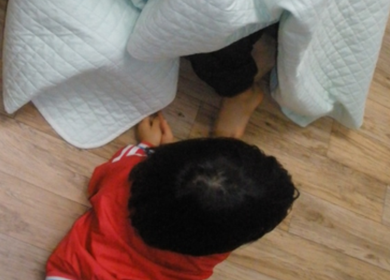
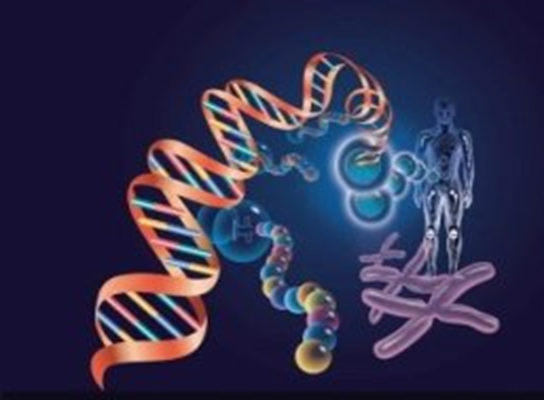
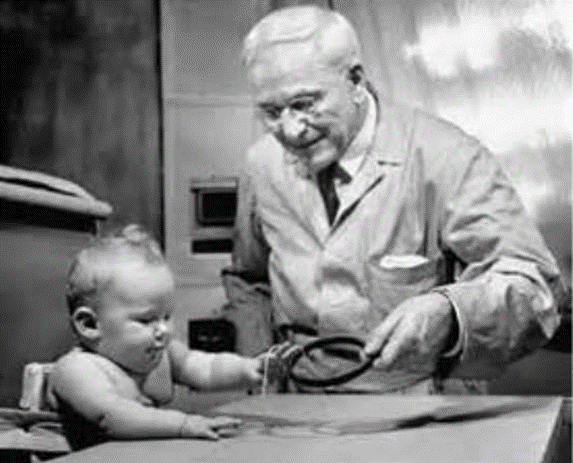

1. 게젤의 생애와 사상
게젤(Arnold Gesell, 1880~1961)은 1880년 미국 위스콘신 주에서 태어났고, 알마에서 성장하였다. 게젤은 1906년 클라크 대학에서 Hall의 지도하에 심리학으로 박사학위를 취득하였다. 1911년에는 예일대학에 ‘영아발달연구소’를 설립하였고, 1915년에 의학박사학위를 취득한 후 심리학과 의학을 통합한 정신발달의 연구에 전념하였다.

저서 ‘취학전 영아의 지적 성장(Mental Growth of Preschool Child)' (1925), '생후 첫 5년(The Five Years of Life)' (1940), '영영아와 현대의 문화(Infant and Child in the Culture of Today)' (1943) 등 관찰법을 통해 영아발달을 연구한 대표적인 학자이다.
1938년에는 생후 4주의 영아를 평가하기 위한 수정발달 도표를 만들었다. 그는 영아의 운동행동, 적응행동, 언어행동, 사회적 행동 등 자료들을 분석하여 마침내 영아 발달을 평가하는 규준을 마련하였다. 게젤의 발달 검사는 가장 오래된 검사로 1941년부터 시행되었다. 출생부터 6세의 영유아들의 발달을 진단하기 위한 검사로 적응, 운동, 사회적행동, 언어의 4가지 범주로 구성되어 있다.
2. 발달은 내재된 특별 프로그램 순서로 성장
게젤(1945)은 태아가 모체에서 하나의 개체로 자리 잡은 후 10개월 동안 외부로부터의 영향(환경)보다는 내적인 특별한 프로그램에 의해 언제나 정해진 순서로 성장한다는 발달의 예정론을 주장하였다. 즉, 영아의 신체발달 뿐 아니라 언어발달, 인지발달이나 행동은 이미 결정된 발달 예정표에 따라 출현된다는 것이다.
인간 성장의 구조적, 행동적, 생리적, 심리적 측면을 태생학적 모형(embryological model)으로 모두 설명하였다. 모든 유기체는 성장하는데 있어 이미 출생 전 성장의 방향이 결정되어 있는 유전적인 성장 모형(growth matrix)을 갖고 태어난다는 점이다. 즉, 내적인 힘에 의해 발달하는 이러한 기제를 성숙(maturation)이라고 하였다.
출생 후 환경적 요인은 유전과 성장모형을 지지해 주거나 약간 수정할 뿐, 발달을 유발시키지는 못하기 때문에 발달의 방향을 바꾸거나 촉진하는 역할을 하지 않는다. 성숙이론에서 발생학적으로 항상 같은 순서에 의해 정해진 발달단계를 거치지만 발달속도에는 개인차가 존재한다.

3. 성숙이론에 의한 게젤의 행동발달 이론
첫째, 신체의 발달과 행동은 계획된 방식으로 발달하므로 서로 예측이 가능하다.
둘째, 행동은 똑 같은 환경에서 자라더라도 신체구조와 함수관계에 있기 때문에 행동이 다르게 나타난다.
셋째, 환경은 행동발달에 중요한 요인이지만, 연령에 따라 좋을 수도 있고 좋지 않을 수도 있는 것과 같이 서로 다른 영향이 나타난다.
지금까지 살펴본 것과 같이 성장연구에서는 패턴화 과정(patterning process)에 따라 아이들의 행위가 체계화 된다. 게젤은 패턴원리가 어떻게 체계화되는가를 발달방향의 원리, 상호적 교류의 원리, 기능적 비대칭의 원리, 개별적 성숙의 원리, 자기 규제의 원리 등 다섯 가지로 설명하였다.
4. 발달 패턴 원리에 의한 행동 특징
1) 방향의 원리
발달은 정돈된 방식에 의해서 진행된다. 발달은 머리에서 발쪽으로 체계적으로 진행되며, 팔의 협응이 다리의 협응에 선행된다. 이러한 경향을 두미(cephalocaudal)발달 경향이라고 부른다. 또 다른 예는 말초보다 신체의 중심이 먼저 발달한다는 것이다. 어깨 동작은 손목과 손가락 동작보다 더 일찍 나타난다.
방향의 원리에서 근원(proximodistal)발달 경향은 아이들의 잡기행동에서도 나타나는데 23주경에 나타나는 잡기행동은 아주 미숙하고 주로 상박(upper arm)의 움직임에 의존한다. 그러나 28주가 되면 엄지손가락의 섬세한 사용에[ 의해 잡기행동은 보다 더 섬세한 근육운동에 의해 주도된다.
2) 상호적 교류의 원리
영아가 먼저 한 손을 사용하고 그리고 나서 다른 한 손을 사용하며 그 다음 양손을 사용하는 등 계속적인 반복과정을 통하여 능숙하게 손을 사용할 수 있게 되는 것을 상호적교류(reciprocal interweaving)라고 한다. 그는은 상호적 교류의 원리는 성격 형성 과정에서도 자주 나타난다고 보았다.
인간은 내향적 특성과 외향적 특성이 있는데 3세에서 3세반까지는 약간 소심하며 내향적 성격 특성을 나타내고, 4세에는 외향적 특성을 보이다가 5세가 되면 내향적과 외향적 두가지 성격 특성이 통합되어 점차 균형을 이룬다고 보았다.
3) 기능적 비대칭의 원리
인간발달에서 균형이나 조화를 이루는 것은 어려운 일이며 오히려 약간의 분균형이 훨씬 더 기능적이다. 이러한 기능적 불균형은 영아의 경직성 목반사(tonic neck reflex)에서 잘 나타난다.
영아는 누워 있을 때 펜싱 운동하는 자세처럼 머리를 한쪽 방향으로 돌리고 한 팔은 머리가 돌려진 방향으로 내밀고 같은 쪽 다리는 쭉편 상태이며 다른 쪽 팔은 가슴에 얹고 그와 같은 쪽 다리는 무릎의 구부러진 자세를 취할 수 있게 된다.
기능적 비대칭적(functional asymmetry)원리에서 영아의 행동은 환경에 익숙해지고, 환경을 이해하려는 아이의 노력에 있어서 중요한 단계가 된다. 또한 기능적 비대칭의 원리가 아이들의 오른손잡이, 왼손잡이와 관련이 있다고 믿었다.
4) 자기 규제의 원리
부모가 수유와 수면 등의 생리적인 리듬을 영아의 요구대로 따랐더니 영아 스스로 점차적으로 수유시간을 줄이고 더 오랫동안 깨어 있게 되었다. 이러한 과정이 계속 일정하게 진행된 것은 아니고 때로는 뒤로 후퇴할 때도 있었다. 그러나 이러한 과정을 거치면서 영아는 점차적으로 안정적인 스케줄을 형성하였다.
이러한 유기체의 자기 규제(self-regulation)의 원리는 아이가 스스로 자신의 수준에 맞도록 발전과 퇴보의 과정을 주기적으로 거친 후에 성장되어 가는 것이다.

게젤의 관점은 발달단계 과정에 있어서 신체발달 뿐 아니라 행동도 계획된 방식에 의해 발달하므로 예측 가능하다고 하였다. 아이들의 행동은 신체구조와 관련된 행동을 한다는 것이다. 환경이 발달에 영향을 주지 않지만 행동발달 주기는 출생~5세, 5세~10세, 10세~16세로 각 주기의 행동변화는 미숙(비평형)한 반응과 성숙(평형)한 반응 사이를 오가며 이루어진다.
아이가 또래의 아이들과 비슷한 수준으로 자라고 있는지, 부모로서 어떤 부분이 부족하고, 어떤 부분을 보충해야 하는지를 알 수 있다. 또한 부모는 아이가 자신과 비슷할 것이라 생각하고 자신의 기준에 맞춰 아이를 양육하는 것이 아니다. 아이와 내가 다름을 인정하고, 그에 따른 아이에 대한 이해를 할 경우 자아의 부분이 넓어질 수 있다. 그러므로 어릴수록 아이들은 미성숙하고 바람직하지 않게 나타나는 행동은 성장함에 따라 보다 더 성숙해지고 바람직한 행동으로 변화되어 간다.
출처: 곽노의, 김경철, 김유미, 박대근(2013). 영유아발달. 양서원.
권순황, 선애순,이형선(2015), 영아발달. 양서원
김영애, 선애순, 정효정(2018). 영유아발달. 양서원
박성연(2010). 아동발달. 교문사.
우수경, 정우너주, 박숙희, 신혜경, 이정미, 김호, 서윤희, 김기예(2013). 영아발달. 공동체.
정옥분(2013). 영아발달. 학지사.
홍순옥, 김인순, 박순호(2017). 영유아발달. 양서원.
2022.01.15 - [분류 전체보기] - 뇌의 구조와 기능 - 영아기에 성장급등기
뇌의 구조와 기능 - 영아기에 성장급등기
뇌의 구조와 기능은 영아기에 가장 중요 출생 시 신생아의 두뇌는 평균 300~400g 정도로 성인의 25~30% 정도에 불과하지만, 2세경이 되면 75%까지 증가하는 두뇌의 성장급등기(brain growth spurt)를 맞이
think-sis.co.kr